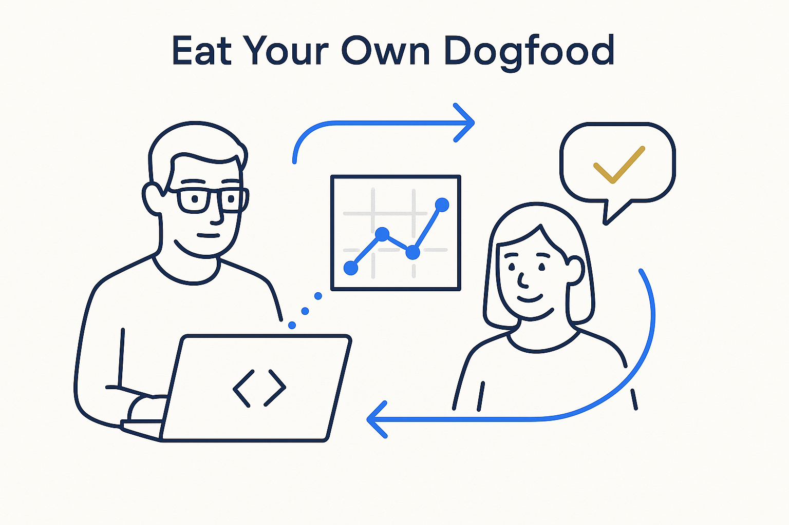

Modelers must be transparent in method and deliverables, ask for constant feedback, and make output both AI-readable and human-readable — because the abstract thinkers are the ones most likely to build the wrong thing well.

> Modelers must be transparent in method and deliverables, ask for constant feedback, and make output both AI-readable and human-readable — because the abstract thinkers are the ones most likely to build the wrong thing well.
We — modelers, business analysts, knowledge workers, consultants — are the abstract thinkers in the room. That is exactly the risk: we can build a technically correct model of the wrong thing, cleanly and confidently, and never notice. So the discipline that keeps us honest is not more cleverness. It is transparency and feedback. Be open about the methodology and the deliverables, and ask for feedback constantly — not once at the end, but throughout, from the people who own the domain.
That only works if the output can actually be understood on both sides of the table. Our deliverables have to be readable by AI and by mere mortals at the same time: the structured markdown, YAML and rules that a machine can act on, and the visual, plain-language version that a domain expert can correct. If only the abstract thinkers can read it, it is not a model of the business — it is a private artifact that happens to be about the business.
The good news is that this is finally possible. With the tools now at our disposal — whiteboards, visualization, advanced generated diagrams, and AI — we can show the same structure in the register each audience needs, and keep every view in sync, *if we work structured.* Structure is what lets one source drive both the machine-readable model and the human-readable picture.
Part of dogfooding is having a backroom — a place where your own machinery is on display, not hidden. The Beacon app makes this literal: alongside the everyday views there is a “Backroom” menu option that shows how the system itself is built and run. That is the stance to take with your own work: don’t just deliver the polished frontroom, expose the backroom too — the model, the rules, the decisions behind the deliverable — so others can inspect and correct it. Model your own systems, not only the client’s (document your own system). Dogfood your own method: make your thinking visible, invite the correction, and let the fact that others can check your work be the proof it is right.
Where it lives: the attitude layer of Breakthrough Modeling — how the abstract thinkers stay honest and understood.